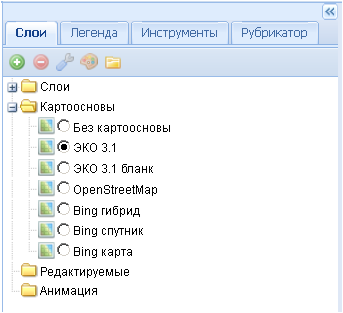
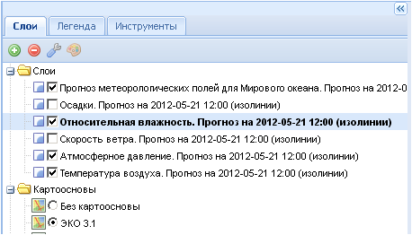
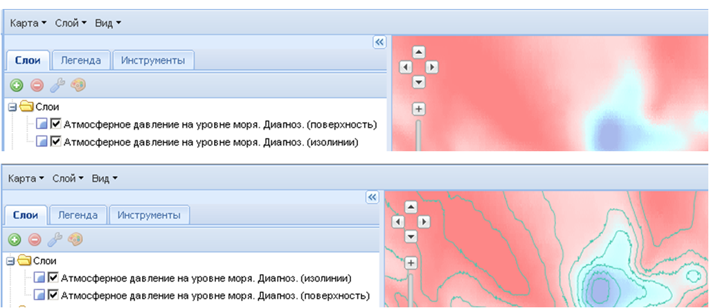
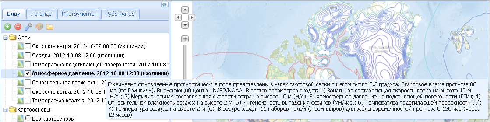
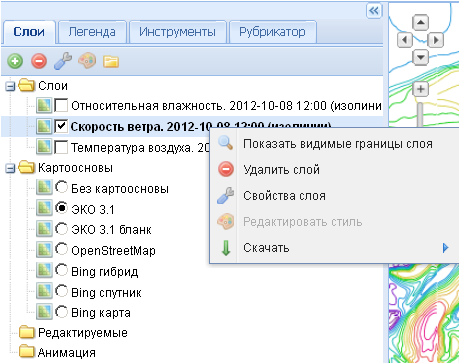

ѕапка слои
ѕри первоначальном запуске приложени€ папка —лои €вл€етс€ пустой.

ѕосле загрузки и добавлени€ необходимых пользователю слоев (см. —лой-ƒобавить), а также при повторном запуске проекта на боковой панели задач по€витс€ список загруженных слоев.

ќтображение слоев в рабочем окне карты регулируетс€ сн€тием или постановкой галочки напротив названи€ нужного сло€, активаци€ слоев осуществл€етс€ нажатием левой кнопкой мыши на названии сло€ (при этом шрифт помен€етс€ с обычного на жирный).
ѕор€док отображени€ слоев в рабочем окне соответствует их положению в списке слоев на боковой панели задач Ц сначала отображаютс€ слои из нижней части списка, затем - из верхней. ≈сли слои вверху списка €вл€ютс€ поверхност€ми, то они будут перекрывать слои из нижней части списка. „тобы помен€ть пор€док отображени€ слоев, нужно перетащить перекрытый слой выше по списку с помощью нажатой левой кнопки мыши.

ѕри наведении курсора на название сло€ оно подсвечиваетс€ серым цветом, и по€вл€етс€ окошко с краткой характеристикой каждого сло€ (метаданные), которое через 15 секунд исчезает.

≈сли нажать правой кнопкой мыши на названии любого сло€, раскроетс€ дополнительное окошко контекстного меню.
